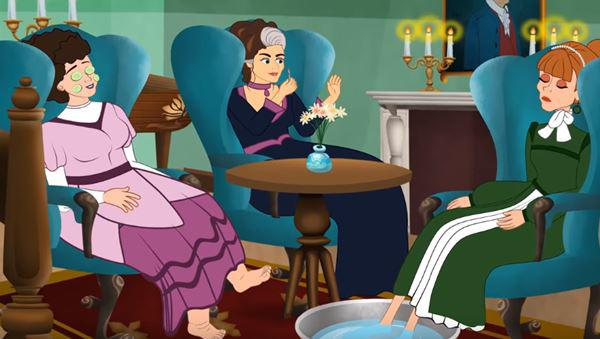
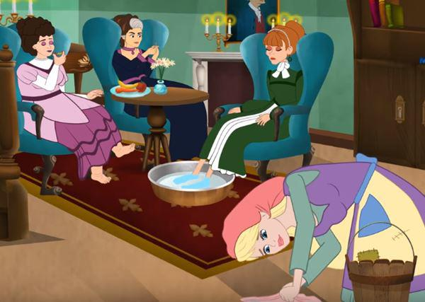
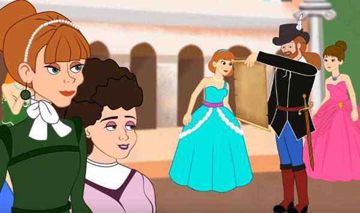
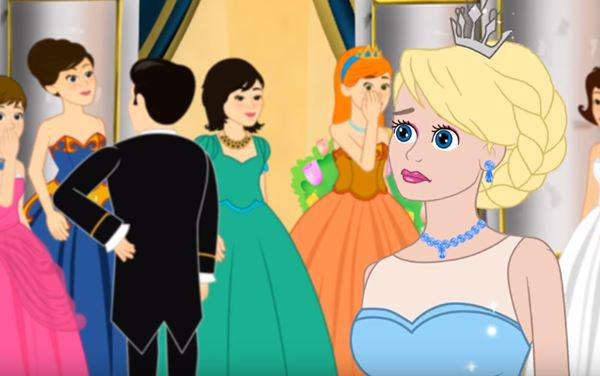
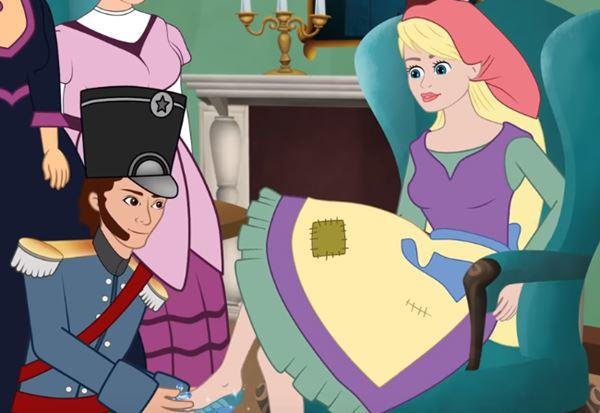

Ngày xửa ngày xưa có một người đàn ông rất giàu có, nhưng vợ của ông ta lại đang bị ốm nặng. Khi mà bà cảm thấy mình chuẩn bị gần đất xa trời rồi thì bà liền gọi cô con gái độc nhất vô nhị của mình tới bên cạnh giường mình đang nằm, rồi bà dặn dò với con gái rằng:
– Con gái yêu dấu của mẹ, khi mẹ đi rồi thì con hãy cố gắng chăm chỉ và nết na nhé, còn mẹ thì vẫn sẽ mãi mãi ở bên cạnh và phù hộ cho con.
Bà mẹ vừa nói xong lời trăn trối thì liền nhắm mắt qua đời. Sau khi mẹ mất thì ngày nào cô bé cũng tới bên cạnh mộ của mẹ mình mà khóc thương. Cô bé vâng lời mẹ nên ngày ngày rất chăm chỉ và nết na khiến cho tất cả mọi người xung quanh đều cảm thấy yêu mến cô bé.
Rồi khi mùa đông đã tới, tuyết đã phủ đầy một lớp dày ngay trên mộ của người mẹ, nhìn nó giống hệt như là một tấm khăn màu trắng xinh đẹp vậy. Rồi khi những ánh nắng mặt trời của mùa xuân tới và cuốn mất đi chiếc khăn trắng tinh ấy đi thì người cha quyết định sẽ cưới vợ hai.
Không chỉ đem vợ hai về nhà, mà người dì ghẻ này còn đem theo cả hai cô con gái riêng của mình nữa. Cả hai đứa con gái riêng này mặt mày tuy rằng cũng sáng sủa và kháu khỉnh, nhưng trong bụng lại vô cùng xấu xa và đen tối.
Cũng từ ngày đó trở đi thì cô bé kia phải sống một cuộc đời khốn khổ. Mụ dì ghẻ hùa cùng với hai đứa con gái riêng của mình bảo nhau rằng:
– Chúng ta không thể nào cứ để cho cái con ngan ngu ngốc ấy ngồi lỳ ở trong nhà được! Nếu nó muốn có bánh mà ăn thì phải tự đi mà kiếm. Ra đây ngay lập tức, con làm bếp!
Khi cô bé ra ngoài, chúng đem lột sạch tất cả những quần áo đẹp đẽ đang mặc trên người cô ra, ném cho cô chiếc áo choàng màu xám vô cùng cũ kĩ và xấu xí, sau đó lại ném tiếp cho cô đôi guốc mộc nữa. Rồi thì chúng vui vẻ cười nói:
– Hãy nhìn xem cô công chúa đài các của chúng ta ngày nào đã thay đổi hình dạng của mình như thế nào kìa!
Và ba mẹ con họ cứ thế reo lên mà nhạo báng đủ điều, sau đó mới đẩy cô xuống nhà bếp. Họ bắt cô từ sáng tới tận tối làm lụng vất vả, từ tờ mờ sáng thì cô đã phải dậy, rồi đi gánh nước, về lại nhóm bếp, sau đó thì thổi cơm và giặt giũ. Nhưng như vậy vẫn còn chưa đủ, hai đứa con gái của dì ghẻ nghĩ ra rất nhiều cách để mà hành hạ cô, khi đã hành hạ chán chê thì chúng lại hả hê chế giễu, chúng còn đem đậu Hà Lan trộn lẫn cùng đậu biển đổ xuống tro rồi bắt cô nhặt riêng từng loại.
Khi tối đến, sau cả một ngày phải làm lụng vất vả, cơ thể cô đã mệt lử cả đi, nhưng ba mẹ con dì ghẻ cũng chẳng cho cô được ngủ trên một chiếc giường tử tế, chúng bắt cô ngủ ở trên đống tro tàn ngay cạnh bếp. Bởi vì lúc nào cũng ở gần tro bụi trong bếp nên nhìn cô càng ngày càng lem luốc, nên hai đứa con gái của dì ghẻ liền đặt tên cho cô là “Lọ Lem”.
Có một lần người cha chuẩn bị đi chợ phiên, ông ta hỏi hai đứa con của dì ghẻ xem chúng muốn mua món quà như thế nào. Đứa con gái thứ nhất thì nói:
– Con muốn có quần áo đẹp.
Còn đứa thứ hai lại nói rằng:
– Con muốn có ngọc với đá quý nữa.
Người cha lại quay ra hỏi:
– Còn Lọ Lem, con thì muốn thứ gì?
– Thưa cha, lúc trên đường trở về nhà, có cành cây nào vướng vào mũ của cha thì xin cha bẻ cành cây đó về cho con.
Đi chợ phiên trở về, người cha không quên mua quần áo đẹp cùng ngọc trai, đá quý về cho hai đứa con gái của dì ghẻ. Lúc đi trên đường, ông cưỡi ngựa ngang qua bụi cây, một cành dẻ vô tình vướng vào người khiến chiếc mũ ông đang đội rơi xuống đường. Nhớ đến Lọ Lem, ông liền bẻ luôn cành dẻ ấy mang về nhà.
Khi về đến nhà, người cha đem quà đã mua chia cho hai đứa con gái của dì ghẻ đồ chúng đã xin, ông cũng đưa cành dẻ kia cho Lọ Lem. Lọ Lem liền cám ơn cha mình, sau đó mang theo cành dẻ kia đến bên mộ của mẹ mình rồi trồng ngay bên cạnh mộ, sau đó cô ngồi đó khóc lóc thảm thiết, hai hàng nước mắt cứ chảy xuống không ngừng, tưới ướt cả cành cây dẻ mới trồng. Đột nhiên cành dẻ nảy dễ đâm chồi, sau đó một thời gian ngắn thì từ cành cây nhỏ đã trở thành cây dẻ cao lớn, tán lá xòe to.
Hằng ngày Lọ Lem đều chăm chỉ ra mộ của mẹ viếng ba lần, xong cô lại ngồi đó mà khóc lóc khấn mẹ, mỗi lần cô như vậy thì đều có một chú chim màu trắng bay tới rồi đậu ở trên cành cây dẻ. Hễ thấy Lọ Lem nói ra điều mong ước muốn thứ gì thì chim lập tức đem thả thứ ấy cho cô.
Ngày kia, nhà vua cho mở hội tận ba ngày, ngài cho mời hết tất cả những hoa khôi ở trong nước tới tham dự để cho hoàng tử con trai mình kén vợ.
Khi hai đứa con gái của dì ghẻ nghe tin mình cũng có thiệp mời tới tham dự thì vô cùng vui mừng, chúng liền cho gọi Lọ Lem tới và bảo cô:
– Mày mau mau chải đầu rồi đi đánh lại giày cho bọn tao, nhớ buộc dây giày cho thật chặt, bọn tao còn phải đi tới dự hội trong cung vua đấy.
Lọ Lem ngoan ngoãn làm theo những gì chúng sai khiến, sau đó lại ngồi ôm mặt khóc một mình, bởi vì cô cũng muốn được đi nhảy tại hội ấy. Cô liền xin mụ dì ghẻ cho mình được đi cùng. Nhưng dì ghẻ lại nói:
– Cái đồ Lọ Lem mày, người thì toàn bụi bẩn mà lại dám đòi được đi dự hội à! Quần áo, giày không có mà còn đòi được đi nhảy cơ!
Lọ Lem vẫn khẩn khoản cầu xin dì ghẻ cho phép mình đi. Cuối cùng dì ghẻ mới nói là:
– Tao vừa mới đổ một đấu đậu biển vào trong đám tro, nếu như mày có thể nhặt hết số đậu ấy trong vòng hai giờ đồng hồ thì tao sẽ cho mày được đi hội.
Lọ Lem vâng lời, cô lập tức chạy hướng cửa sau và ra vườn, cô gọi to:
– Hỡi những chú chim câu hiền lành, những chim gáy cùng tất cả những chú chim khác trên trời, các bạn hãy bay về đây nhặt đậu giúp em với:
Đậu ngon chim bỏ vào niêu,
Còn là đậu xấu chim bỏ vào diều chim nhé.
Cô vừa dứt tiếng gọi thì có hai con chim bồ câu màu trắng lập tức bay qua ô cửa sổ bếp và sà xuống đám tro nhặt đậu, tiếp theo còn có chim gáy, sau đó thì tất cả những loài chim đang bay trên trời đều đua nhau sà xuống nơi tro bếp.
Đôi chim bồ câu kêu gù gù hai tiếng rồi cúi đầu mổ lia lịa, liên tục phát ra những tiếng “píc, píc, píc”, chúng đem nhặt những hạt đậu tốt rồi bỏ vào trong nồi. Chưa hết một giờ đồng hồ thì đám chim đã cùng nhau nhặt xong chỗ đậu tốt ở trong đống tro bếp. Khi mọi việc xong xuôi thì đàn chim lại cùng nhau cất cánh mà bay đi. Lọ Lem mang chỗ đậu đã nhặt xong tới cho dì ghẻ xem, trong bụng mừng thầm, cô tin chắc rằng dì ghẻ sẽ cho mình đi theo tới chỗ dạ hội của nhà vua tổ chức. Nhưng không, mụ dì ghẻ nói với cô:
– Mày không thể đi đâu. Lọ Lem! Xem mày có được bộ quần áo tử tế nào không mà đòi đi nhảy, mọi người ở đó sẽ nhạo báng mày.
Khi trông thấy cô khóc nức nở thì dì ghẻ lại nói tiếp:
– Nếu như mày có thể nhặt hết hai đấu đậu biển lẫn trong đống tro ấy trong vòng một giờ đồng hồ thì tao sẽ cho mày được đi hội cùng.
Lúc đó dì ghẻ nghĩ rằng: “Nó chắc chắn không bao giờ có thể nhặt xong được”. Sau khi mụ dì ghẻ đã đổ hết đậu vào trong đống tro cạnh bếp, Lọ Lem lại đi từ cửa sau ra ngoài vườn và gọi lớn:
– Hỡi những chú chim câu hiền lành, những chim gáy cùng tất cả những chú chim khác trên trời, các bạn hãy bay về đây nhặt đậu giúp em với:
Đậu ngon chim bỏ vào niêu,
Còn là đậu xấu chim bỏ vào diều chim nhé.
Ngay lập tức lại có hai con chim bồ câu màu trắng lập tức bay qua ô cửa sổ bếp và sà xuống đám tro nhặt đậu, tiếp theo còn có chim gáy, sau đó thì tất cả những loài chim đang bay trên trời đều đua nhau sà xuống nơi tro bếp. Đôi chim bồ câu kêu gù gù hai tiếng rồi cúi đầu mà mổ lia lịa, liên tục phát ra những tiếng “píc, píc, píc”, chúng nhặt những hạt đậu tốt rồi bỏ vào trong nồi. Chưa hết nửa giờ thì đám chim đã cùng nhau nhặt xong chỗ đậu tốt ở trong đống tro bếp. Khi mọi việc đã xong thì đàn chim lại cùng nhau cất cánh mà bay đi. Lọ Lem đem chỗ đậu đã nhặt xong tới cho dì ghẻ xem, trong bụng mừng thầm, cô tin rằng lần này thể nào mình cũng sẽ được dì ghẻ cho phép tới chỗ dạ hội. Nhưng không, mụ dì ghẻ lại nói với cô:
– Dù mày làm gì cũng tốn công vô ích thôi Lọ Lem ạ! Mày không thể nào mà đi theo cùng được, bởi vì mày có đây quần áo đẹp mà lại đòi đi nhảy chứ. Chả nhẽ mày lại bắt chúng tao phải bẽ mặt với thiên hạ bởi vì đứa như mày sao?
Nói đoạn mụ dì ghẻ lập tức quay lưng và cùng với hai đứa con gái của mụ vội vã lên xe tới cung vua dự dạ hội. Khi trong nhà chẳng còn một bóng người thì Lọ Lem liền tìm ra mộ của mẹ, cô đứng ngay dưới gốc của cây dẻ mà gọi nhỏ:
– Cây ơi, hãy rung đi nào,
Hãy thả xuống cho em những áo vàng, áo bạc.
Khi cô vừa dứt lời thì chim liền thả xuống một bộ váy áo thêu những chỉ vàng chỉ bạc lấp lánh cho cô, còn thêm cả một đôi hài lụa cũng thêu chỉ bạc nữa. Lọ Lem vội vàng đem theo đống trang phục rực rỡ ấy vào nhà thay ra rồi đến chỗ dạ hội. Bởi vì Lọ Lem quá xinh đẹp nên cả mụ dì ghẻ lẫn hai đứa con gái của mụ đều không thể nào nhận ra được, bọn chúng cứ ngỡ rằng cô là công chúa của đất nước xa lạ nào đó được mời tới để dự dạ hội. Cả ba mẹ con mụ ta nào đâu ngờ được người đó chính là cô bé Lọ Lem, vẫn cứ đinh ninh cho rằng giờ phút này cô đang ở nhà lúi húi nhặt đống đậu ra khỏi tro bếp.
Hoàng tử bị thu hút bởi sắc đẹp lộng lẫy nên lập tức tiến lại gần cô, lịch sự đưa tay mời cô cùng nhảy một điệu. Hai người cùng nhau nhảy, và hoàng tử lại không muốn bắt cặp nhảy chung với một ai nữa, vì thế qua hết bài nhạc này tới bài nhạc khác vẫn không chịu rời tay khỏi tay cô. Khi có người khác tới để mời cô cùng nhảy thì hoàng tử lại nói rằng:
– Đây là bạn nhảy của tôi!
Cho đến khi tối đến, Lọ Lem muốn được về nhà, chàng hoàng tử lại nói:
– Hãy để tôi cùng đi, tôi muốn được đưa cô về tận nhà.
Hoàng tử muốn biết nàng thiếu nữ rất xinh đẹp này là tiểu thư của nhà nào. Khi đã gần tới nhà thì cô liền gỡ bàn tay của hoàng tử ra rồi nhảy lên phía chuồng của chim bồ câu. Còn chàng hoàng tử thì vẫn ngây ngốc đứng chờ ở đó rất lâu, đến tận khi người cha trở về nhìn thấy thì chàng liền kể lại cho ông nghe chuyện có một cô gái lạ mặt nhảy lên chuồng chim bồ câu. Vì vậy ông ta nghĩ thầm:
– Chẳng lẽ đó lại là Lọ Lem?
Nghĩ vậy nên ông ta liền đem rìu cùng câu liêm tới chẻ đôi chiếc chuồng chim bồ câu kia ra. Tuy nhiên thì ông chẳng thấy người nào ở đó. Rồi khi họ trở về đến nhà thì vẫn thấy Lọ Lem đang mặc trên người bộ quần áo nhem nhuốc và còn đang nằm ở trên đống tro bếp bẩn thỉu, ngay cạnh ống khói của lò sưởi vẫn có một ngọn đèn dầu đang cháy tù mù.
Nhưng thực sự là lúc đó Lọ Lem đã rất nhanh mà nhảy khỏi chuồng chim bồ câu, rồi chạy về phía cây dẻ bên mộ của người mẹ, thay bộ quần áo đẹp ra để lại đó. Và con chim kia lại sà xuống tha đống đồ đó đi mất. Sau đó thì Lọ Lem lại mặc lên người chiếc áo choàng màu xám cũ kĩ, trở lại đống tro cạnh bếp và nằm an ổn ở đó.
Ngày hôm sau dạ hội lại tiếp tục diễn ra như cũ. Đợi đến khi cả cha, dì ghẻ cùng hai người con gái của dì ghẻ đều đã đi hết. Lọ Lem mới đến chỗ gốc cây dẻ và gọi:
– Cây ơi, hãy rung đi nào,
Hãy thả xuống cho em những áo vàng, áo bạc.
Và chim lại thả cho cô một bộ trang phục còn lộng lẫy hơn cả hôm trước nhiều. Lọ Lem sau khi thay xong quần áo thì lại lên đường đến dạ hội. Cô xuất hiện dưới ánh đèn sáng của dạ hội khiến cho mọi người đều phải sửng sốt, cô đẹp đến rực rỡ làm cho ánh mắt của mọi người nhìn cô đều say đắm không nỡ rời.
Hoàng tử hôm nay đã đợi cô rất lâu, khi thấy cô đến lập tức tiến lại và nắm lấy tay cô. Hôm đó hoàng tử cũng chỉ nhảy cùng với duy nhất một người là cô mà thôi. Và những người khác ở trong dạ vũ đến mời cô cùng nhảy thì chàng hoàng tử lại nói:
– Đây là bạn nhảy của tôi!
Khi tối đến, lúc cô xin được trở về nhà thì hoàng tử lại theo sau, chàng muốn biết được nhà của cô ở nơi nào. Nhưng vừa mới đến nơi thì cô đã vội vã chạy về phía sau vườn. Nơi đó có cây lê đang kì trĩu quả nhìn thật ngon mắt. Lọ Lem nhanh như sóc liền trèo lên cây và lẩn trốn giữa những tán lá dày.
Lần này hoàng tử cũng chẳng biết được cô trốn ở nơi nào, chàng đành phải đợi người cha trở về rồi lại nói:
– Cô gái lạ mặt ấy lại chạy trốn rồi. Ta nghĩ cô ấy đã nhảy lên trên cây lê này rồi.
Người cha nghe vậy thì lại thầm nghĩ:
– Chẳng lẽ đó lại là Lọ Lem?
Người cha sai người đem rìu tới và đẵn cây lê kia xuống, nhưng mà chẳng trông thấy người nào ở trên cây cả. Khi tất cả mọi người cùng tới bếp, Lọ Lem đã ở đó, nằm trên đống tro bếp như mọi ngày khác.
Nhưng thực ra thì Lọ Lem đã nhảy xuống từ phía bên kia của cây lê, rồi đem bộ quần áo xinh đẹp tới trả cho chim vẫn đậu trên cây dẻ, sau đó mặc vào chiếc áo choàng xám bẩn thỉu của mình.
Ngày dạ hội thứ ba lại đến, cha, dì ghẻ cùng với hai cô con gái của dì ghẻ lại ăn diện rời khỏi nhà. Và Lọ Lem lại đến chỗ mộ của mẹ mình và bảo với cây dẻ:
– Cây ơi, hãy rung đi nào,
Hãy thả xuống cho em những áo vàng, áo bạc.
Lần này chim thả xuống cho cô một bộ váy áo vô cùng xinh đẹp, lộng lẫy chưa từng có và còn cả đôi hài làm bằng vàng. Lọ Lem thay quần áo đẹp, đi hài vàng tới dự dạ hội. Sự xuất hiện của cô khiến cho mọi người đều há hốc mồm ngạc nhiên, tất cả đều trợn tròn mắt mà ngắm nhìn cô.
Đêm này cũng không có gì khác, hoàng tử vẫn luôn nắm tay cùng cô nhảy hết bài này tới bài khác. Nếu như có ai khác tới và mời cô nhảy cùng thì chàng lại bảo:
– Đây là bạn nhảy của tôi!
Khi trời đã tối, Lọ Lem lại xin phép được trở về. Lần này hoàng tử cũng định sẽ đưa cô về, nhưng Lọ Lem lại nhanh hơn mà lẩn trốn khiến hoàng tử không theo kịp. Tuy nhiên thì lần này chàng hoàng tử đã nghĩ được một kế rất hay, chàng cho người đổ đầy nhựa thông trên chiếc thang, vì vậy nên lúc cô nhảy lên trên thang thì chiếc hài vàng bên chân trái vì bị nhựa thông dính chặt lại.
Lúc hoàng tử chạy tới nơi thì chỉ thấy chiếc hài bằng vàng nhỏ nhắn và xinh đẹp dính lại nơi đó, còn Lọ Lem thì đã biến mất. Ngày hôm sau chàng hoàng tử liền đem theo chiếc hài vàng đến nhà tìm người cha, chàng nói:
– Ta sẽ chỉ lấy người có thể đi vừa chiếc hài này làm vợ.
Hai đứa con gái của dì ghẻ nghe được chàng hoàng tử nói như vậy thì vui mừng vô cùng, bởi vì cả hai người đều có được những đôi chân rất đẹp. Người thử đầu tiên là cô chị cả, cô ta đem theo chiếc hài vàng vào trong buồng để thử cho mẹ mình nhìn trước. Tuy chân cô đẹp thật nhưng lại không cách nào nhét được ngón chân cái của mình vào trong chiếc giày. Dì ghẻ trông thấy vậy lập tức đưa cho con gái mình con dao rồi bảo:
– Con cứ cắt phăng cái ngón chân đó đi. Khi đã được làm hoàng hậu thì có bao giờ phải đi bộ đâu.
Cô con gái nghe mẹ nói vậy thì lập tức cầm dao chặt ngay ngón chân cái của mình đi, rồi sau đó cắn răng chịu đau mà nhét chân vào trong hài. Cô ta ra ngoài đến trước mặt hoàng tử. Khi thấy hài vừa chân, chàng hoàng tử liền nhận cô ta làm cô dâu của mình, chàng bế cô ta lên trên ngựa để cùng cưỡi trở về cung.
Trên con đường trở về hoàng cung, ngựa phải đi qua một ngôi mộ, ở đó có đôi chim bồ câu đang đậu ở trên cành cây dẻ, chim hót:
– Rúc-di-cúc, rúc-di-cúc.
Máu thấm trên hài,
Do chân dài quá,
Chính cô dâu thật,
Vẫn ở trong nhà.
Nghe tiếng chim hót, hoàng tử liền liếc nhìn dưới chân cô gái, chàng thấy máu vẫn đang chảy ra không ngừng, chàng lập tức dừng ngựa lại, rồi đưa cô dâu giả trả về nhà, và nói:
– Đây đâu phải là cô dâu thật của ta.
Chàng hoàng tử lấy lại chiếc hài vàng đưa cho cô em. Cô ta mang hài vào trong buồng để thử, may mắn là các ngón chân của cô ta đều lọt được vào trong hài, nhưng gót chân của cô ta lại quá to.
Lần này mụ dì ghẻ cũng đưa cho con mình một con dao và nói:
– Con cứ cắt phăng miếng gót chân ấy đi. Khi đã được làm hoàng hậu thì có bao giờ phải đi bằng chân đất đâu.
Nghe lời mẹ nên cô ta cắt một miếng lớn ở gót chân rồi lại cắn răng chịu đau đớn nhét chân mình vào trong chiếc hài nhỏ. Cô ra trình diện trước mặt hoàng tử. Thấy hài vừa chân nên chàng hoàng tử lập tức nhận cô ta làm cô dâu của mình, rồi lại bế cô ta đặt lên ngựa để cùng mình về cung.
Trên con đường trở về hoàng cung, ngựa phải đi qua một ngôi mộ, ở đó có đôi chim bồ câu đang đậu ở trên cành cây dẻ, chim hót:
– Rúc-di-cúc, rúc-di-cúc.
Máu thấm trên hài,
Do chân dài quá,
Chính cô dâu thật,
Vẫn ở trong nhà.
Nghe tiếng chim hót, hoàng tử liền liếc nhìn dưới chân cô gái, chàng thấy máu vẫn đang chảy ra không ngừng, chàng lập tức dừng ngựa lại, rồi đưa cô dâu giả trả về nhà, và nói:
– Đây cũng đâu phải là cô dâu thật của ta. Gia đình này còn có người con gái khác không?
Lần này người cha trả lời:
– Tâu hoàng tử là không còn ạ. Vợ cả của tôi trước khi qua đời để lại cho tôi một đứa con gái, nhưng đứa này cả người đều xanh xao và nhem nhuốc. Thứ như nó thì sao mà làm cô dâu cho được.
Tuy nhiên hoàng tử lại bảo ông ta cứ cho gọi cô gái đó ra đây. Mụ dì ghẻ thấy vậy thì liền chen ngang:
– Tâu hoàng tử, không nên làm thế đâu ạ. Cả người nó đều hết sức dơ bẩn, sao có thể gọi nó ra đây mà nhìn hoàng tử được.
Dù cho bọn họ có nói như thế nào đi nữa thì chàng hoàng tử vẫn cứ khăng khăng gọi cho được Lọ Lem ra gặp mặt. Lọ Lem liền rửa sạch mặt mũi, chân tay của mình sau đó mới ra cúi chào hoàng tử. Chàng liền đưa chiếc hài vàng nhỏ xinh cho cô. Lọ Lem ngồi xuống ghế, đem bàn chân nhỏ rút ra khỏi đôi guốc mộc nặng nề và xỏ vào trong hài vàng thì vừa như in. Lúc cô đứng dậy, chàng hoàng tử đã trông thấy khuôn mặt của cô thì lập tức nhận ra cô chính là cô gái xinh đẹp đã làm bạn nhảy của mình mấy ngày dạ vũ vừa rồi, chàng reo lên:
– Đây mới đúng là cô dâu thật của ta!
Mụ dì ghẻ cùng với hai đứa con gái của mụ lúc này cả khuôn mặt đều tái mét đi vì sợ hãi và tức giận. Chàng hoàng tử lập tức bế bổng nàng Lọ Lem đưa lên ngựa và trở về cung.
Trên con đường trở về hoàng cung, ngựa phải đi qua chỗ gốc cây dẻ, đôi chim bồ câu đang đậu ở trên cành cây liền hót:
– Rúc-di-cúc, rúc-di-cúc.
Hài không có máu,
Chân vừa như in,
Đúng cô dâu thật,
Hoàng tử dẫn về.
Sau khi hót xong thì đôi chim ấy liền bay tới và đậu trên vai Lọ Lem, mỗi con đậu một bên vai của cô.
Đám cưới của hoàng tử nhanh chóng được tổ chức, Lọ lem giờ đây đã trở thành công chúa. Hai đứa con gái của mụ dì ghẻ vì muốn phỉnh nịnh mong được hưởng theo phú quý nên cũng kéo đến. Khi đoàn rước dâu đi đến thì cô chị cả lập tức chạy tới bên phải, còn cô em thì lại chạy sang bên trái. Đôi chim bồ câu liền mổ cho mỗi cô mất một con mắt. Rồi khi hai chị em trở về, cô chị lại đi bên trái, còn cô em lại đi bên phải. Đôi chim bồ câu kia lại mổ cho mỗi cô mất thêm một con mắt nữa. Vậy là cả hai phải chịu cảnh mù lòa cả đời, họ bị trừng trị vì tội ác cũng như những giả dối suốt thời gian qua.